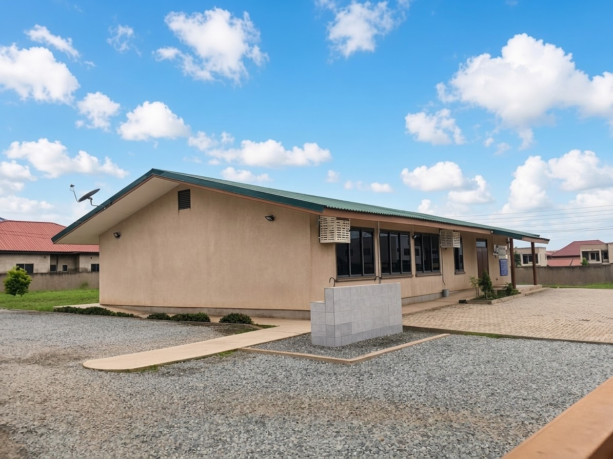
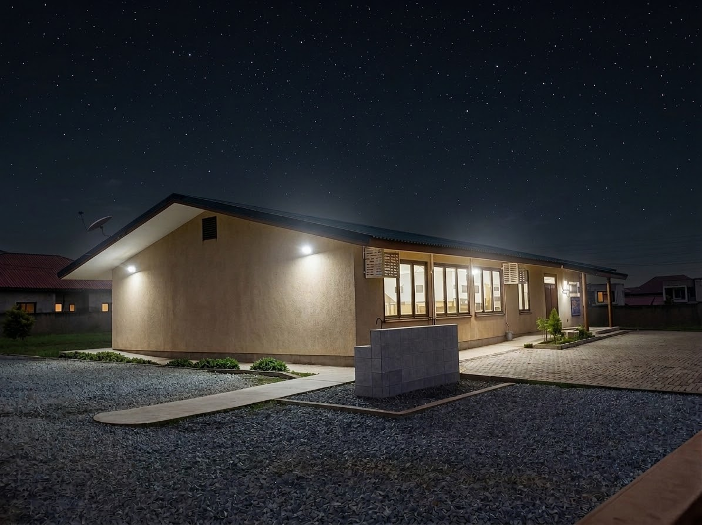

This Week's Team
Cleaning Group
Group
–
Led by —
Status
Currently on duty
Upcoming Schedule
Auto-calculated from today's Ghana date — no manual entry needed
Field Service Groups
Tap a card to see the full team